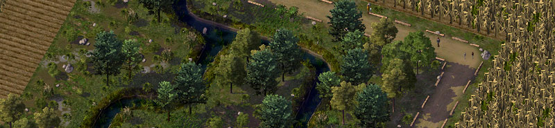
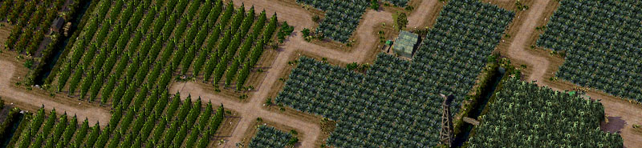
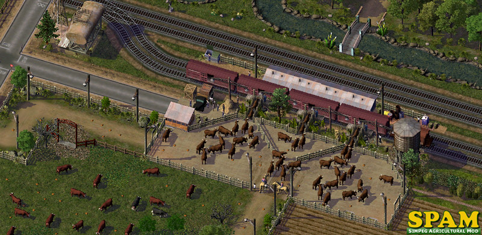

Here a quick overview of other packs that are designed to be integrated with SPAM.
A set of Irrigation Canals designed for the SPAM.
The water texture of these canals is designed to match the PPond set and all of the ARS sets, but they will work well in any rural setting. This first pack contains the 'Core Lots', the 'Culvert Lots' and the 'Utility Lots'...

Various sets with SPAM-compatible textures and props to connect your fields and farms.
To enhance the core set of wide access roads there is a large range of subsets with many variations and options – narrow and offset roads, different driveways and gates, road sections with fences or waterpipes at the side, matching transition pieces to combine any or all of these subsets, plus a host of special purpose items like transit enabled crossings and connectors, extenders and more...

Soon available at the PLEX.
Note: This mod was packaged separately to avoid any possible conflicts. Advanced users can install and test it at their own discretion!
With the optional SPAM Traffic Mod installed, all traffic congestion is reduced in a realistic manner. Freight trucks and trains will roll 24-7 as they do in the real world... and the freight truck automata overkill that default farms generate has been toned down considerably...
Soon available at the PLEX.
Be sure to check the PLEX regularly as we expect numerous additional items and sets to be developed in the near future – including freight stations, utilities and more...

* The entire PEG SPAM collection is available on the PLEX as well as the STEX.
* All discussions and support for this product are hosted on www.simpeg.com
This ReadMe is also available online:
SPAM ReadMe Online »